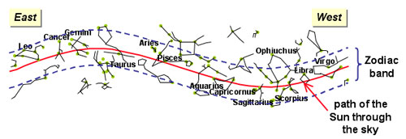
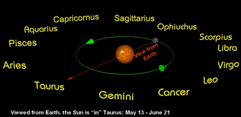

The zodiac stretches about 8-9 degrees either side of the ecliptic, and is the region of the sky where we can find the Sun, Moon and planets (except for Pluto). The zodiac is narrow because most of the planets have orbits that are only slightly inclined to that of the Earth. The exception is Pluto, whose orbital inclination of 17 degrees takes it out of the zodiac during part of its orbit.

There are 13 constellations through which the ecliptic passes. Known as the Zodiacal Constellations, they are:
| Aries | Taurus | Gemini | Cancer | Leo | Virgo | Libra |
| Scorpius | Ophiuchus | Sagittarius | Capricornus | Aquarius | Pisces |
| These constellations are more familiar to us as the astrological ‘star signs’ (actually ‘sun signs’) under which a person is born. The star sign is determined by the position of the Sun ‘in’ a particular constellation at the time of birth. Put another way, as the Earth moves around the Sun in its orbit, each of the Zodiacal constellations will be hidden ‘behind’ the Sun at some point during the year. Whatever constellation is hidden behind the Sun at the time of your birth is known as your star sign. This is demonstrated in the diagram on the right. |

The Earth’s orbit places the Sun in front of each of the 12 zodiac constellations at different times throughout the year. Whatever constellation is hidden by the Sun at your time of birth defines your star sign.
|
The above explanation of how you are assigned your star sign is not quite correct these days. These star signs were developed over a thousand years ago and, due to the precession of the equinoxes, the Sun is no longer in the constellation originally attributed to each star sign. For example, if you were born an Aquarian 3,000 years ago, the Sun was in the constellation Aquarius. If you are born an Aquarian now, the Sun will actually be in the constellation Capricornus.
You will also note that under the constellation boundaries defined by the International Astronomical Union, the ecliptic passes through the constellation Ophiuchus – which is not included in the astrological signs of the zodiac, however which is considered an astronomical Zodiacal Constellation.